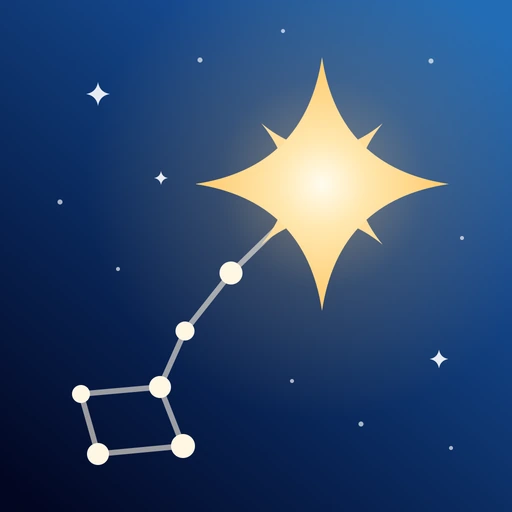

Starward: Sky MapTerms of Service
Last updated: November 15, 2026
1. Acceptance of Terms
By downloading or using Starward on iOS or iPadOS or accessing this website, you agree to these Terms of Service. Starward is provided free of charge for personal and educational astronomy use.
2. Open Data Sources & Licenses
Starward incorporates open astronomical catalogs bundled offline for educational and stargazing use:
- Yale Bright Star Catalogue (5th rev., V/50): Free for scientific and educational use with acknowledgement of CDS/VizieR.
- OpenNGC: Deep-sky catalog by Mattia Verga, distributed under CC BY-SA 4.0.
- NASA/JPL Small-Body Database: Orbital elements for bright asteroids (public US Government work, credit NASA/JPL-Caltech).
- Planetary & Ephemeris Algorithms: Derived from published astronomical algorithms (J. Meeus; E. M. Standish / JPL; IAU Working Group constants).
3. Disclaimer
Starward is provided on an “as is” basis without warranties of any kind. Never look directly at the Sun with your eyes, binoculars, or telescope without certified solar filtration.
4. Contact
Questions or feedback can be sent to khanhuitse05@gmail.com.